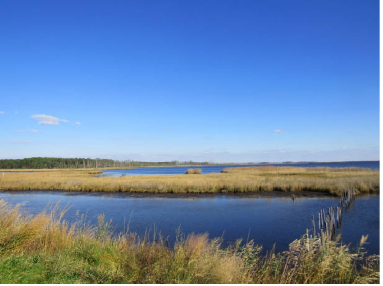
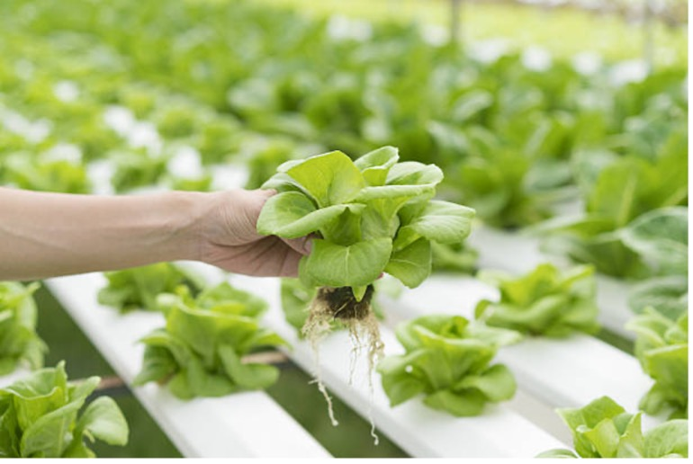
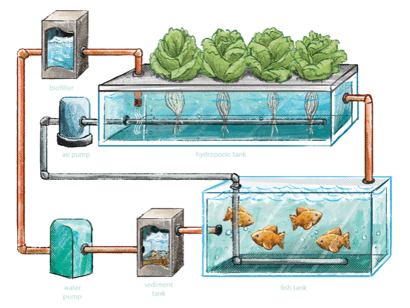
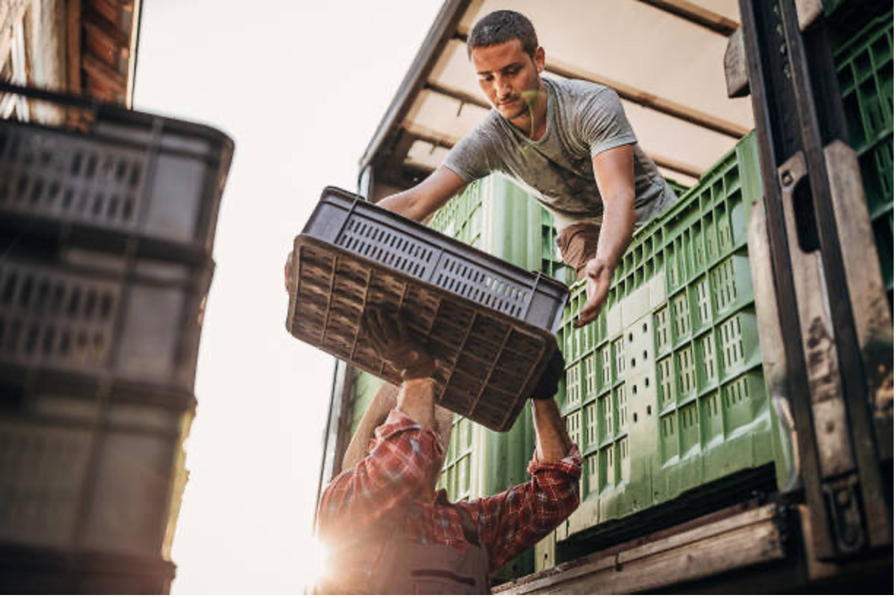
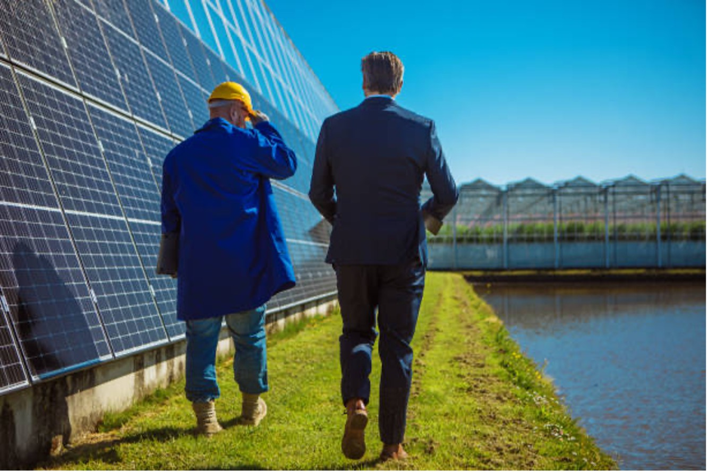
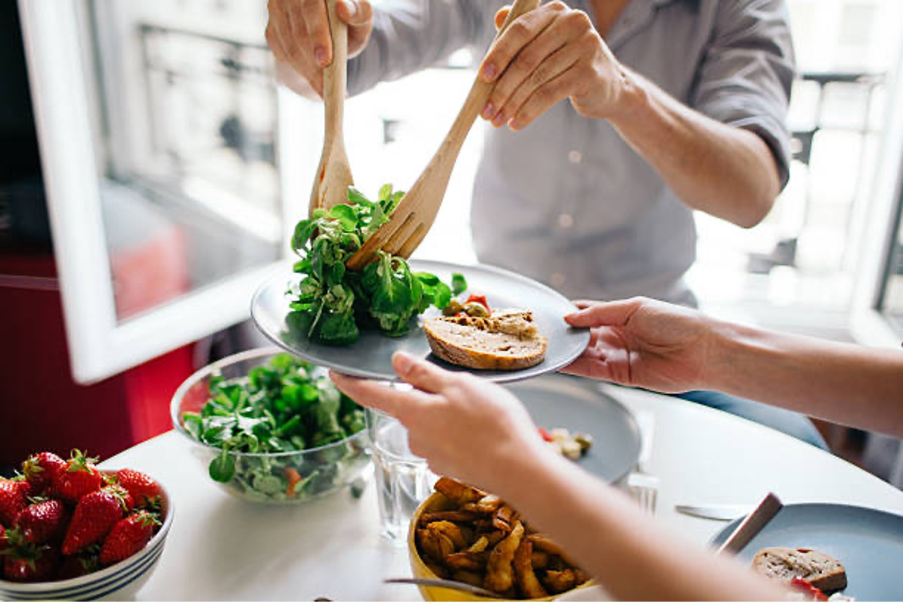

The inspiration for creating a world class aquaponics company started on the Eastern shore of Virginia with the non-profit IPAC-MERC. Launched in 2008 by Jim Welch for the purpose of research, education, and preservation of marine life with a focus on demonstrating best practices for land management and water conservation.
When Jim was introduced to the owners of Integrated Energy Solutions, LLC (Intenergys), a Virginia based sustainability consulting company, it was clear two visions aligned and Floreo, LLC was formed.
Floreo's primary purpose is to healthy, better tasting produce, and nutrient rich fish in a fully sustainable environment for distribution to the communities and regions in which they reside. In addition, Floreo seeks to promote food security and sustainability by partnering with non-profits such as IPAC-MERC to provide educational outreach to schools and the public at large.
Floreo is committed to resilient, sustainable food production. That is why we develop our infrastructure with onsite power generation, rainwater harvesting systems and strategically locate our facilities closer to the end-user to reduce consumption of natural resources. Our plan is a vision of the future.
Aquaculture: growing fish and other aquatics animals
Hydroponics: growing plants in water without soil
Aquaponics is a closed loop greenhouse growing system where the fish fertilize the water used for plant growth and the plants clean the water used to raise the fish. Symbiotic and sustainable food production at its purest form.
Aquaponics can grow up to 30 times the amount per acre versus traditional farming. It uses approximately 90% less water than traditional farming. Fish and vegetables can be grown at the same time under the same roof. These resources can be continuously harvested each season of the year, unrestricted by weather.
Greenhouse growing is done in a controlled temperature environment. The water is naturally fertilized through fish waste with minimal need for land and no pesticides.
Floreo’s business model is to build world-class aquaponic facilities within the geographic locations that they serve and not hundreds or even thousands of miles from the consumer. We will invest the time and money to develop the aquaponics technology and renewable energy required to meet each community’s needs and serve the fresh produce they prefer the most at an affordable price. Our philosophy is that location matters! It matters because…
Communities Matter - being close to and within communities means that our products can be delivered to the end user in a much quicker time frame; ensuring freshness and lowering costs. Building and hiring local helps us understand the uniqueness of each community. Thereby giving us the knowledge needed to be flexibility in what produce is grown - catering to the demands of the markets and restaurants in the area.
Environment Matters - with energy being a necessity in aquaponics growth, each Floreo facility incorporates renewable power generation, water capture, and reclamation as part of the plan. Solar, natural gas and wind power are ways Floreo is developing a sustainable food system. On average, aquaponics uses 90% less water than traditional farming practices. Being closer to communities allows for less consumption of resources in order to store and deliver products to the end users in the community.
People Matter - food harvested today can be on the plates of consumers much faster, ensuring fresher and more nutritious food. Additionally, locations close to communities results in less cost for storage and delivery, thereby passing the savings onto purchasers. Having our people living among the people and organizations we serve, gives us the insight and knowledge we need to produce the specific items the community loves.
Location matters so we can provide the freshest, most nutritious, sustainable produce on the planet. No other grower can match the benefits of the Floreo “Location Matters” philosophy.